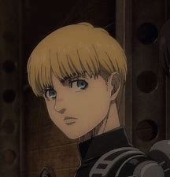

Armin
Armin Arlert est le 15e et actuel commandant du Survey Corps, nommé ainsi par Hange Zoë avant leur mort. Il est aussi un ami d’enfance d’Eren Yeager et Mikasa Ackerman, et l’un des deux deutéragonistes de la série[10]. Bien qu’il semble être l’un des plus faibles physiquement du 104e corps d’entraînement, son intelligence et son génie stratégique en font un atout inestimable, surtout lorsqu’il est associé à Hange. Après la bataille du district de Shiganshina, il prit le pouvoir des Titans à Bertolt Hoover et entra en possession du Titan Colosse.